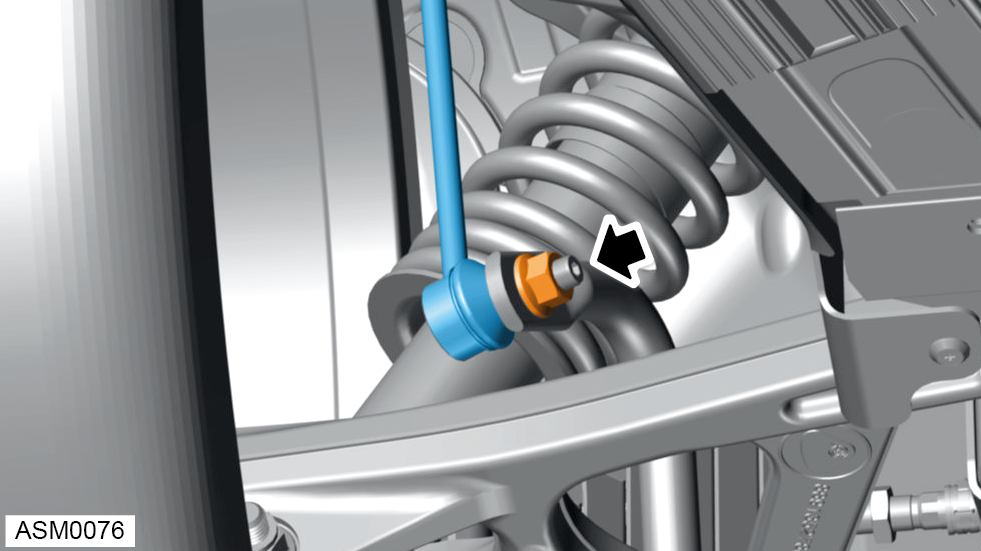
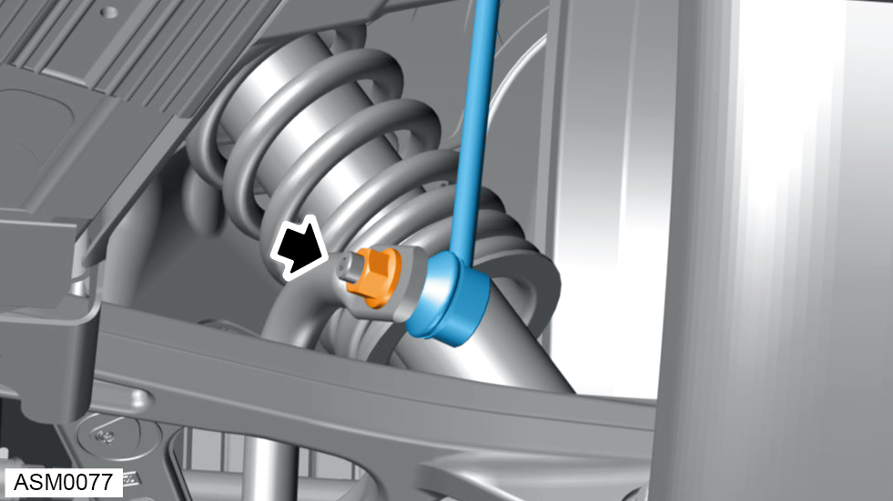
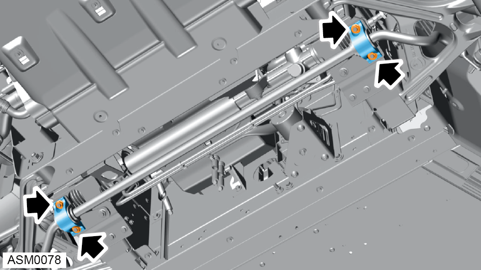
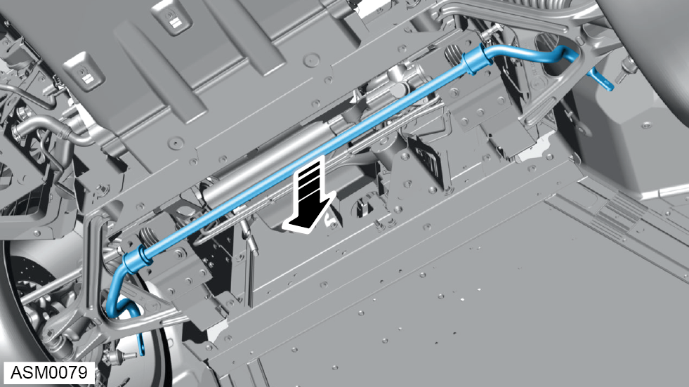
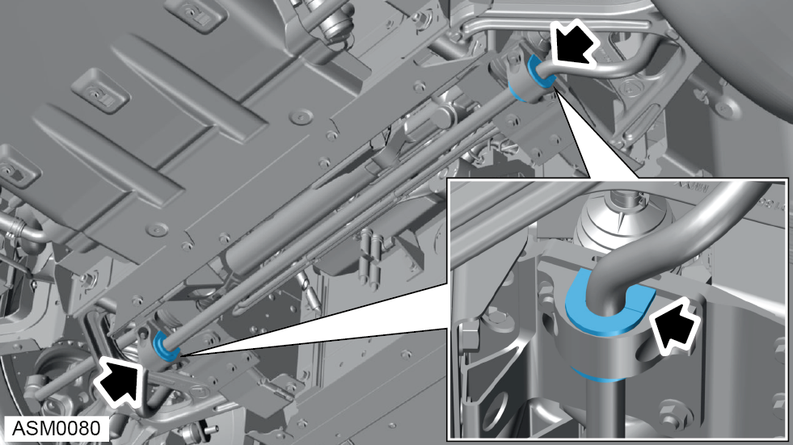

Anti-Roll Bar - Front
Print
Operation Code: 31.01.21-02
Removal
- Remove undertray - front. Refer to procedure.

- Remove and discard M12 nut securing left side drop link to anti-roll bar. Torque 36 Nm.
NOTE: Insert 5mm hex bit into ball pin stud to prevent anti roll bar drop link ball joint from spinning during removal / installation.
- Disengage left side anti-roll bar drop link ball joint from anti-roll bar.

- Remove and discard M12 nut securing right side drop link to anti-roll bar. Torque 36 Nm.
NOTE: Insert 5mm hex bit into ball pin stud to prevent anti roll bar drop link ball joint from spinning during removal / installation.
- Disengage right side anti-roll bar drop link ball joint from anti-roll bar.

- Remove M10 nuts (x4) securing anti-roll bar brackets to front structure. Torque 45 Nm.
- Remove anti-roll bar brackets.

- Remove anti-roll bar from vehicle.
Do not carry out further disassembly if component is removed for access only.
- Remove anti-roll bar bushes from anti-roll bar.
Installation
- Installation is the reverse of removal procedure except for the following:

- Install new anti-roll bar bushes so the split in the bush is orientated to the rear of car.